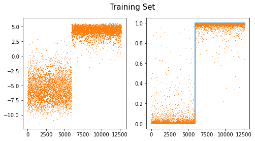
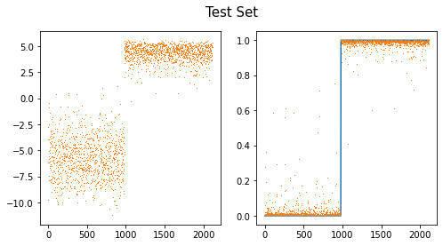
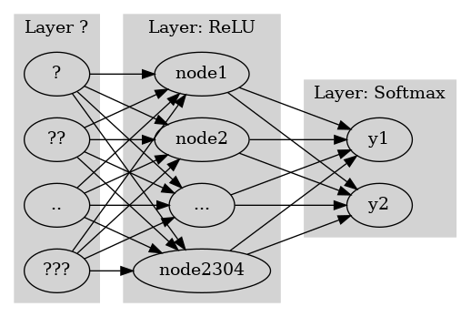
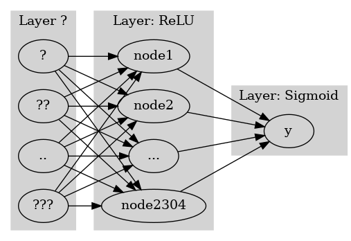
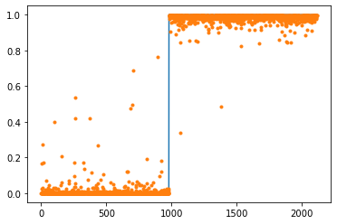

import torch
import torchvision
import numpy as np
from fastai.vision.all import * 기계학습 특강 (8주차) 10월26일–(1) [이미지자료분석 - CNN 다중클래스 분류, fastai metric 사용]
imports
import graphviz
def gv(s): return graphviz.Source('digraph G{ rankdir="LR"'+s + '; }');#hide
graphviz.set_jupyter_format('png')'svg'CNN 다중클래스 분류
결론 (그냥 외우세요)
- 2개의 class를 구분하는 문제가 아니라 \(k\)개의 class를 구분해야 한다면?
일반적인 개념
- 손실함수: BCE loss \(\to\) Cross Entropy loss
- 마지막층의 선형변환: torch.nn.Linear(?,1) \(\to\) torch.nn.Linear(?,k)
- 마지막층의 활성화: sig \(\to\) softmax
파이토치 한정 - y의형태: (n,) vector + int형 // (n,k) one-hot encoded vector + float형 - 손실함수: torch.nn.BCEWithLogitsLoss, \(\to\) torch.nn.CrossEntropyLoss - 마지막층의 선형변환: torch.nn.Linear(?,1) \(\to\) torch.nn.Linear(?,k) - 마지막층의 활성화: None \(\to\) None (손실함수에 이미 마지막층의 활성화가 포함)
실습: 3개의 클래스를 구분
path = untar_data(URLs.MNIST)training set
X0 = torch.stack([torchvision.io.read_image(str(fname)) for fname in (path/'training/0').ls()])
X1 = torch.stack([torchvision.io.read_image(str(fname)) for fname in (path/'training/1').ls()])
X2 = torch.stack([torchvision.io.read_image(str(fname)) for fname in (path/'training/2').ls()])
X = torch.concat([X0,X1,X2])/255
y = torch.tensor([0]*len(X0) + [1]*len(X1)+ [2]*len(X2))#.reshape(-1,1)다중일때 int가 아닌float으로서 y를 정의해준 모습
test set
X0 = torch.stack([torchvision.io.read_image(str(fname)) for fname in (path/'testing/0').ls()])
X1 = torch.stack([torchvision.io.read_image(str(fname)) for fname in (path/'testing/1').ls()])
X2 = torch.stack([torchvision.io.read_image(str(fname)) for fname in (path/'testing/2').ls()])
XX = torch.concat([X0,X1,X2])/255
yy = torch.tensor([0]*len(X0) + [1]*len(X1)+ [2]*len(X2))#.reshape(-1,1)- dls
len(X)18623ds1 = torch.utils.data.TensorDataset(X,y)
ds2 = torch.utils.data.TensorDataset(XX,yy)
dl1 = torch.utils.data.DataLoader(ds1,batch_size=1862) # 에폭당 11번 iter
dl2 = torch.utils.data.DataLoader(ds2,batch_size=3147) #
dls = DataLoaders(dl1,dl2) - lrnr
net1 = torch.nn.Sequential(
torch.nn.Conv2d(1,16,(5,5)),
torch.nn.ReLU(),
torch.nn.MaxPool2d((2,2)),
torch.nn.Flatten()
)net1(X).shapetorch.Size([18623, 2304])net = torch.nn.Sequential(
net1,
torch.nn.Linear(2304,3) # 0,1,2 3개를 구분하는 문제이므로 out_features=3
)
loss_fn = torch.nn.CrossEntropyLoss() lrnr = Learner(dls,net,loss_fn) adam기본인 learner
- 학습
지금은 epoch당 11번 도는 설정, 18623/1862 = 11.xx
lrnr.fit(10) | epoch | train_loss | valid_loss | time |
|---|---|---|---|
| 0 | 1.532752 | 1.059955 | 00:00 |
| 1 | 1.190896 | 0.830852 | 00:00 |
| 2 | 1.008513 | 0.646931 | 00:00 |
| 3 | 0.865353 | 0.427843 | 00:00 |
| 4 | 0.728408 | 0.264087 | 00:00 |
| 5 | 0.602026 | 0.179980 | 00:00 |
| 6 | 0.497519 | 0.137681 | 00:00 |
| 7 | 0.415113 | 0.112264 | 00:00 |
| 8 | 0.349265 | 0.096033 | 00:00 |
| 9 | 0.296159 | 0.084770 | 00:00 |
- 예측
lrnr.model.to("cpu")Sequential(
(0): Sequential(
(0): Conv2d(1, 16, kernel_size=(5, 5), stride=(1, 1))
(1): ReLU()
(2): MaxPool2d(kernel_size=(2, 2), stride=(2, 2), padding=0, dilation=1, ceil_mode=False)
(3): Flatten(start_dim=1, end_dim=-1)
)
(1): Linear(in_features=2304, out_features=3, bias=True)
)pd.DataFrame(lrnr.model(XX)).assign(y=yy) | 0 | 1 | 2 | y | |
|---|---|---|---|---|
| 0 | 2.838031 | -14.031689 | -1.230620 | 0 |
| 1 | -0.732540 | -6.829875 | -0.657546 | 0 |
| 2 | 2.525343 | -7.813309 | -2.658828 | 0 |
| 3 | 1.173236 | -5.229916 | -2.532024 | 0 |
| 4 | 0.102843 | -3.444337 | -1.044323 | 0 |
| ... | ... | ... | ... | ... |
| 3142 | -2.697058 | -3.533814 | -0.154926 | 2 |
| 3143 | -5.334007 | -6.445426 | 2.196163 | 2 |
| 3144 | -3.041989 | -5.655945 | 1.335649 | 2 |
| 3145 | -4.720510 | -5.899189 | 1.208340 | 2 |
| 3146 | -2.413806 | -3.101650 | 0.852677 | 2 |
3147 rows × 4 columns
pd.DataFrame(lrnr.model(XX)).assign(y=yy).query('y==0')| 0 | 1 | 2 | y | |
|---|---|---|---|---|
| 0 | 2.838031 | -14.031689 | -1.230620 | 0 |
| 1 | -0.732540 | -6.829875 | -0.657546 | 0 |
| 2 | 2.525343 | -7.813309 | -2.658828 | 0 |
| 3 | 1.173236 | -5.229916 | -2.532024 | 0 |
| 4 | 0.102843 | -3.444337 | -1.044323 | 0 |
| ... | ... | ... | ... | ... |
| 975 | 1.330218 | -6.934738 | -0.893682 | 0 |
| 976 | 3.073657 | -11.082842 | -3.012246 | 0 |
| 977 | 3.607128 | -7.156256 | -5.264734 | 0 |
| 978 | 1.993969 | -7.487792 | -2.306112 | 0 |
| 979 | 1.534865 | -7.852367 | -1.404178 | 0 |
980 rows × 4 columns
- 대체적으로 첫번째 칼럼의 숫자들이 다른칼럼보다 크다.
pd.DataFrame(lrnr.model(XX)).assign(y=yy).query('y==1')| 0 | 1 | 2 | y | |
|---|---|---|---|---|
| 980 | -4.239265 | 2.068619 | -1.274470 | 1 |
| 981 | -4.559580 | 2.755761 | -1.822832 | 1 |
| 982 | -4.617976 | 1.838857 | -0.515022 | 1 |
| 983 | -4.119075 | 2.247138 | -0.991911 | 1 |
| 984 | -3.344346 | 1.100410 | -1.496944 | 1 |
| ... | ... | ... | ... | ... |
| 2110 | -4.141958 | 2.405002 | -1.260467 | 1 |
| 2111 | -4.405143 | 2.479209 | -1.356262 | 1 |
| 2112 | -3.695343 | 1.773260 | -1.218412 | 1 |
| 2113 | -3.986775 | 2.423826 | -1.349702 | 1 |
| 2114 | -4.925949 | 2.532830 | -1.160674 | 1 |
1135 rows × 4 columns
- 대체적으로 두번째 칼럼의 숫자들이 다른칼럼보다 크다.
pd.DataFrame(lrnr.model(XX)).assign(y=yy).query('y==2')| 0 | 1 | 2 | y | |
|---|---|---|---|---|
| 2115 | -4.723238 | -3.105680 | 1.052694 | 2 |
| 2116 | -2.576618 | -7.337523 | 2.118495 | 2 |
| 2117 | -3.796456 | -6.393374 | 2.169248 | 2 |
| 2118 | -3.276625 | -2.622900 | 0.176427 | 2 |
| 2119 | -4.627345 | -5.335648 | 1.157538 | 2 |
| ... | ... | ... | ... | ... |
| 3142 | -2.697058 | -3.533814 | -0.154926 | 2 |
| 3143 | -5.334007 | -6.445426 | 2.196163 | 2 |
| 3144 | -3.041989 | -5.655945 | 1.335649 | 2 |
| 3145 | -4.720510 | -5.899189 | 1.208340 | 2 |
| 3146 | -2.413806 | -3.101650 | 0.852677 | 2 |
1032 rows × 4 columns
- 대체적으로 세번째 칼럼의 숫자들이 다른칼럼보다 크다.
- 예측하는방법? - 칼럼0의 숫자가 크다 -> y=0일 확률이 큼 - 칼럼1의 숫자가 크다 -> y=1일 확률이 큼 - 칼럼2의 숫자가 크다 -> y=2일 확률이 큼
공부: Softmax
- 눈치: softmax를 쓰기 직전의 숫자들은 (n,k)꼴로 되어있음. 각 observation 마다 k개의 숫자가 있는데, 그중에서 유난히 큰 하나의 숫자가 있음.
- torch.nn.Softmax() 손계산
(예시1) – 잘못계산
torch.nn.Softmax?Init signature: torch.nn.Softmax(dim: Union[int, NoneType] = None) -> None Docstring: Applies the Softmax function to an n-dimensional input Tensor rescaling them so that the elements of the n-dimensional output Tensor lie in the range [0,1] and sum to 1. Softmax is defined as: .. math:: \text{Softmax}(x_{i}) = \frac{\exp(x_i)}{\sum_j \exp(x_j)} When the input Tensor is a sparse tensor then the unspecifed values are treated as ``-inf``. Shape: - Input: :math:`(*)` where `*` means, any number of additional dimensions - Output: :math:`(*)`, same shape as the input Returns: a Tensor of the same dimension and shape as the input with values in the range [0, 1] Args: dim (int): A dimension along which Softmax will be computed (so every slice along dim will sum to 1). .. note:: This module doesn't work directly with NLLLoss, which expects the Log to be computed between the Softmax and itself. Use `LogSoftmax` instead (it's faster and has better numerical properties). Examples:: >>> m = nn.Softmax(dim=1) >>> input = torch.randn(2, 3) >>> output = m(input) Init docstring: Initializes internal Module state, shared by both nn.Module and ScriptModule. File: ~/anaconda3/envs/csy/lib/python3.8/site-packages/torch/nn/modules/activation.py Type: type Subclasses:
sftmax = torch.nn.Softmax(dim=0) # columns_netout = torch.tensor([[-2.0,-2.0,0.0],
[3.14,3.14,3.14],
[0.0,0.0,2.0],
[2.0,2.0,4.0],
[0.0,0.0,0.0]])
_netouttensor([[-2.0000, -2.0000, 0.0000],
[ 3.1400, 3.1400, 3.1400],
[ 0.0000, 0.0000, 2.0000],
[ 2.0000, 2.0000, 4.0000],
[ 0.0000, 0.0000, 0.0000]])sftmax(_netout) tensor([[0.0041, 0.0041, 0.0115],
[0.7081, 0.7081, 0.2653],
[0.0306, 0.0306, 0.0848],
[0.2265, 0.2265, 0.6269],
[0.0306, 0.0306, 0.0115]])(예시2) – 이게 맞게 계산되는 것임
sftmax = torch.nn.Softmax(dim=1) # rows_netouttensor([[-2.0000, -2.0000, 0.0000],
[ 3.1400, 3.1400, 3.1400],
[ 0.0000, 0.0000, 2.0000],
[ 2.0000, 2.0000, 4.0000],
[ 0.0000, 0.0000, 0.0000]])sftmax(_netout)tensor([[0.1065, 0.1065, 0.7870],
[0.3333, 0.3333, 0.3333],
[0.1065, 0.1065, 0.7870],
[0.1065, 0.1065, 0.7870],
[0.3333, 0.3333, 0.3333]])(예시3) – 차원을 명시안하면 맞게 계산해주고 경고 줌
sftmax = torch.nn.Softmax()_netouttensor([[-2.0000, -2.0000, 0.0000],
[ 3.1400, 3.1400, 3.1400],
[ 0.0000, 0.0000, 2.0000],
[ 2.0000, 2.0000, 4.0000],
[ 0.0000, 0.0000, 0.0000]])sftmax(_netout)/tmp/ipykernel_2380807/3715462293.py:1: UserWarning: Implicit dimension choice for softmax has been deprecated. Change the call to include dim=X as an argument.
sftmax(_netout)tensor([[0.1065, 0.1065, 0.7870],
[0.3333, 0.3333, 0.3333],
[0.1065, 0.1065, 0.7870],
[0.1065, 0.1065, 0.7870],
[0.3333, 0.3333, 0.3333]])(예시4) – 진짜 손계산
_netout tensor([[-2.0000, -2.0000, 0.0000],
[ 3.1400, 3.1400, 3.1400],
[ 0.0000, 0.0000, 2.0000],
[ 2.0000, 2.0000, 4.0000],
[ 0.0000, 0.0000, 0.0000]])torch.exp(_netout)tensor([[ 0.1353, 0.1353, 1.0000],
[23.1039, 23.1039, 23.1039],
[ 1.0000, 1.0000, 7.3891],
[ 7.3891, 7.3891, 54.5981],
[ 1.0000, 1.0000, 1.0000]])0.1353/(0.1353 + 0.1353 + 1.0000), 0.1353/(0.1353 + 0.1353 + 1.0000), 1.0000/(0.1353 + 0.1353 + 1.0000) # 첫 obs(0.10648512513773022, 0.10648512513773022, 0.7870297497245397)np.exp(_netout[1])/np.exp(_netout[1]).sum() # 두번째 obs tensor([0.3333, 0.3333, 0.3333])np.apply_along_axis(lambda x: np.exp(x) / np.exp(x).sum(),1,_netout)array([[0.10650698, 0.10650698, 0.78698605],
[0.33333334, 0.33333334, 0.33333334],
[0.10650699, 0.10650699, 0.78698605],
[0.10650698, 0.10650698, 0.78698605],
[0.33333334, 0.33333334, 0.33333334]], dtype=float32)위에서 1은 축방향을 의미
공부: CrossEntropyLoss
# torch.nn.CrossEntropyLoss() 손계산: one-hot version
loss_fn = torch.nn.CrossEntropyLoss()_netouttensor([[-2.0000, -2.0000, 0.0000],
[ 3.1400, 3.1400, 3.1400],
[ 0.0000, 0.0000, 2.0000],
[ 2.0000, 2.0000, 4.0000],
[ 0.0000, 0.0000, 0.0000]])_y_onehot = torch.tensor([[0,0,1],
[0,1,0],
[0,0,1],
[0,0,1],
[1,0,0]])*1.0
_y_onehottensor([[0., 0., 1.],
[0., 1., 0.],
[0., 0., 1.],
[0., 0., 1.],
[1., 0., 0.]])위에서 꼭 1.0 곱해줌으로써 int가 아닌 float으로 만들어주기
sftmax = torch.nn.Softmax(dim=1)
sftmax(_netout), _y_onehot(tensor([[0.1065, 0.1065, 0.7870],
[0.3333, 0.3333, 0.3333],
[0.1065, 0.1065, 0.7870],
[0.1065, 0.1065, 0.7870],
[0.3333, 0.3333, 0.3333]]),
tensor([[0., 0., 1.],
[0., 1., 0.],
[0., 0., 1.],
[0., 0., 1.],
[1., 0., 0.]]))- 계산결과
loss_fn(_netout,_y_onehot)tensor(0.5832)- torch.sum(torch.log(sftmax(_netout)) * _y_onehot)/5 tensor(0.5832)- 계산하는 방법도 중요한데 torch.nn.CrossEntropyLoss() 에는 softmax 활성화함수가 이미 포함되어 있다는 것을 확인하는 것이 더 중요함.
- 따라서 torch.nn.CrossEntropyLoss() 는 사실 torch.nn.CEWithSoftmaxLoss() 정도로 바꾸는 것이 더 말이 되는 것 같다.
# torch.nn.CrossEntropyLoss() 손계산: lenght \(n\) vertor version
_netout tensor([[-2.0000, -2.0000, 0.0000],
[ 3.1400, 3.1400, 3.1400],
[ 0.0000, 0.0000, 2.0000],
[ 2.0000, 2.0000, 4.0000],
[ 0.0000, 0.0000, 0.0000]])_y = torch.tensor([2,1,2,2,0])원핫인코딩 안하면 int로 만든 다음에 넣기, float은 또 계산되지 않음!
loss_fn(_netout,_y)tensor(0.5832)실습: \(k=2\)로 두면 이진분류도 가능
- download data
path = untar_data(URLs.MNIST) training
X0 = torch.stack([torchvision.io.read_image(str(fname)) for fname in (path/'training/0').ls()])
X1 = torch.stack([torchvision.io.read_image(str(fname)) for fname in (path/'training/1').ls()])
X = torch.concat([X0,X1])/255
y = torch.tensor([0]*len(X0) + [1]*len(X1))#.reshape(-1,1)y_onehot = torch.nn.functional.one_hot(y).float()
#y_onehot = torch.tensor(list(map(lambda x: [1,0] if x==0 else [0,1],y))).float()float만들어주기 원핫인코딩이기
test
X0 = torch.stack([torchvision.io.read_image(str(fname)) for fname in (path/'testing/0').ls()])
X1 = torch.stack([torchvision.io.read_image(str(fname)) for fname in (path/'testing/1').ls()])
XX = torch.concat([X0,X1])/255
yy = torch.tensor([0]*len(X0) + [1]*len(X1))#.reshape(-1,1)yy_onehot = torch.nn.functional.one_hot(yy).float()
#yy_onehot = torch.tensor(list(map(lambda x: [1,0] if x==0 else [0,1],yy))).float()- dls
ds1 = torch.utils.data.TensorDataset(X,y_onehot)
ds2 = torch.utils.data.TensorDataset(XX,yy_onehot)
dl1 = torch.utils.data.DataLoader(ds1,batch_size=1862) # 에폭당 11번 iter
dl2 = torch.utils.data.DataLoader(ds2,batch_size=3147) #
dls = DataLoaders(dl1,dl2) - lrnr
net = torch.nn.Sequential(
torch.nn.Conv2d(1,16,(5,5)),
torch.nn.ReLU(),
torch.nn.MaxPool2d((2,2)),
torch.nn.Flatten(),
torch.nn.Linear(2304,2)
#torch.nn.Softmax()
)
loss_fn = torch.nn.CrossEntropyLoss()
lrnr = Learner(dls,net,loss_fn) - 학습
lrnr.fit(10) | epoch | train_loss | valid_loss | time |
|---|---|---|---|
| 0 | 1.233556 | 0.787265 | 00:00 |
| 1 | 0.829398 | 0.433228 | 00:00 |
| 2 | 0.650216 | 0.319202 | 00:00 |
| 3 | 0.540207 | 0.183107 | 00:00 |
| 4 | 0.444210 | 0.113277 | 00:00 |
| 5 | 0.365939 | 0.074700 | 00:00 |
| 6 | 0.303410 | 0.049914 | 00:00 |
| 7 | 0.253710 | 0.035714 | 00:00 |
| 8 | 0.214157 | 0.027470 | 00:00 |
| 9 | 0.182333 | 0.022121 | 00:00 |
- 예측 및 시각화
lrnr.model.to("cpu")Sequential(
(0): Conv2d(1, 16, kernel_size=(5, 5), stride=(1, 1))
(1): ReLU()
(2): MaxPool2d(kernel_size=(2, 2), stride=(2, 2), padding=0, dilation=1, ceil_mode=False)
(3): Flatten(start_dim=1, end_dim=-1)
(4): Linear(in_features=2304, out_features=2, bias=True)
)sftmax = torch.nn.Softmax(dim=1)
sig = torch.nn.Sigmoid()
fig,ax = plt.subplots(1,2,figsize=(8,4))
ax[0].plot(net(X).diff(axis=1).data,',',color="C1") # u2-u1
ax[1].plot(y)
ax[1].plot(sftmax(net(X))[:,1].data,',')
#ax[1].plot(sig(net(X).diff(axis=1)).data,',')
fig.suptitle("Training Set",size=15)Text(0.5, 0.98, 'Training Set')
fig,ax = plt.subplots(1,2,figsize=(8,4))
ax[0].plot(net(XX).diff(axis=1).data,',',color="C1")
ax[1].plot(yy)
ax[1].plot(sftmax(net(XX))[:,1].data,',')
#ax[1].plot(sig(net(XX).diff(axis=1)).data,',')
fig.suptitle("Test Set",size=15)Text(0.5, 0.98, 'Test Set')
- note: softmax(u1,u2)=[sig(u1-u2), sig(u2-u1)]=[1-sig(u2-u1),sig(u2-u1)]
\(\frac{1}{e^{u_1}+e^{u_2}} \to \frac{e^{u_1-u_2}}{e^{u_1-u_2}+e^{u_2-u_2}} \to \frac{e^{u_1-u_2}}{e^{u_1-u_2}+1} \to sig(u_2-u_1)\)
공부: 이진분류에서 소프트맥스 vs 시그모이드
- 이진분류문제 = “y=0 or y=1” 을 맞추는 문제 = 성공과 실패를 맞추는 문제 = 성공확률과 실패확률을 추정하는 문제
- softmax, sigmoid - softmax: (실패확률, 성공확률) 꼴로 결과가 나옴 // softmax는 실패확률과 성공확률을 둘다 추정한다. - sigmoid: (성공확률) 꼴로 결과가 나옴 // sigmoid는 성공확률만 추정한다.
- 그런데 “실패확률=1-성공확률” 이므로 사실상 둘은 같은걸 추정하는 셈이다. (성공확률만 추정하면 실패확률은 저절로 추정되니까)
- 아래는 사실상 같은 모형이다.
#collapse
gv('''
splines=line
subgraph cluster_1{
style=filled;
color=lightgrey;
"?"
"??"
".."
"???"
label = "Layer ?"
}
subgraph cluster_2{
style=filled;
color=lightgrey;
"?" -> "node1"
"??" -> "node1"
".." -> "node1"
"???" -> "node1"
"?" -> "node2"
"??" -> "node2"
".." -> "node2"
"???" -> "node2"
"?" -> "..."
"??" -> "..."
".." -> "..."
"???" -> "..."
"?" -> "node2304"
"??" -> "node2304"
".." -> "node2304"
"???" -> "node2304"
label = "Layer: ReLU"
}
subgraph cluster_3{
style=filled;
color=lightgrey;
"node1" -> "y1"
"node2" -> "y1"
"..." -> "y1"
"node2304" -> "y1"
"node1" -> "y2"
"node2" -> "y2"
"..." -> "y2"
"node2304" -> "y2"
label = "Layer: Softmax"
}
''')
#collapse
gv('''
splines=line
subgraph cluster_1{
style=filled;
color=lightgrey;
"?"
"??"
".."
"???"
label = "Layer ?"
}
subgraph cluster_2{
style=filled;
color=lightgrey;
"?" -> "node1"
"??" -> "node1"
".." -> "node1"
"???" -> "node1"
"?" -> "node2"
"??" -> "node2"
".." -> "node2"
"???" -> "node2"
"?" -> "..."
"??" -> "..."
".." -> "..."
"???" -> "..."
"?" -> "node2304"
"??" -> "node2304"
".." -> "node2304"
"???" -> "node2304"
label = "Layer: ReLU"
}
subgraph cluster_3{
style=filled;
color=lightgrey;
"node1" -> "y"
"node2" -> "y"
"..." -> "y"
"node2304" -> "y"
label = "Layer: Sigmoid"
}
''')
- 둘은 사실상 같은 효과를 주는 모형인데 학습할 파라메터는 sigmoid의 경우가 더 적다. \(\to\) sigmoid를 사용하는 모형이 비용은 싸고(학습할 파라메터가 적음) 효과는 동일하다는 말 \(\to\) 이진분류 한정해서는 softmax를 쓰지말고 sigmoid를 써야함. - softmax가 갑자기 너무 안좋아보이는데 sigmoid는 k개의 클래스로 확장이 불가능한 반면 softmax는 확장이 용이하다는 장점이 있음
소프트맥스 vs 시그모이드 정리
- 결론 1. 소프트맥스는 시그모이드의 확장이다. 2. 클래스의 수가 2개일 경우에는 (Sigmoid, BCEloss) 조합을 사용해야 하고 클래스의 수가 2개보다 클 경우에는 (Softmax, CrossEntropyLoss) 를 사용해야 한다.
- 그런데 사실.. 클래스의 수가 2개일 경우일때 (Softmax, CrossEntropyLoss)를 사용해도 그렇게 큰일나는것은 아니다. (흑백이미지를 칼라잉크로 출력하는 느낌)
참고
| \(y\) | 분포가정 | 마지막층의 활성화함수 | 손실함수 |
|---|---|---|---|
| 3.45, 4.43, … (연속형) | 정규분포 | None (or Identity) | MSE |
| 0 or 1 | 이항분포 with \(n=1\) (=베르누이) | Sigmoid | BCE |
| [0,0,1], [0,1,0], [1,0,0] | 다항분포 with \(n=1\) | Softmax | Cross Entropy |
fastai metric 사용
데이터준비
- download data
path = untar_data(URLs.MNIST)- training set
X0 = torch.stack([torchvision.io.read_image(str(fname)) for fname in (path/'training/0').ls()])
X1 = torch.stack([torchvision.io.read_image(str(fname)) for fname in (path/'training/1').ls()])
X = torch.concat([X0,X1])/255
y = torch.tensor([0.0]*len(X0) + [1.0]*len(X1)).reshape(-1,1)- test set
X0 = torch.stack([torchvision.io.read_image(str(fname)) for fname in (path/'testing/0').ls()])
X1 = torch.stack([torchvision.io.read_image(str(fname)) for fname in (path/'testing/1').ls()])
XX = torch.concat([X0,X1])/255
yy = torch.tensor([0.0]*len(X0) + [1.0]*len(X1)).reshape(-1,1)X.shape,XX.shape,y.shape,yy.shape(torch.Size([12665, 1, 28, 28]),
torch.Size([2115, 1, 28, 28]),
torch.Size([12665, 1]),
torch.Size([2115, 1]))사용자정의 메트릭이용
- dls 만들기
ds1 = torch.utils.data.TensorDataset(X,y)
ds2 = torch.utils.data.TensorDataset(XX,yy)
dl1 = torch.utils.data.DataLoader(ds1,batch_size=1266)
dl2 = torch.utils.data.DataLoader(ds2,batch_size=2115)
dls = DataLoaders(dl1,dl2) - lrnr 생성
net = torch.nn.Sequential(
torch.nn.Conv2d(1,16,(5,5)),
torch.nn.ReLU(),
torch.nn.MaxPool2d((2,2)),
torch.nn.Flatten(),
torch.nn.Linear(2304,1),
torch.nn.Sigmoid()
)
loss_fn = torch.nn.BCELoss() def acc(yhat,y) :
return ((yhat>0.5)==y).float().mean()def err(yhat,y):
return 1-((yhat>0.5)==y).float().mean()lrnr = Learner(dls,net,loss_fn,metrics=[acc,err])- 학습
lrnr.fit(10)| epoch | train_loss | valid_loss | acc | err | time |
|---|---|---|---|---|---|
| 0 | 1.012566 | 0.676096 | 0.463357 | 0.536643 | 00:00 |
| 1 | 0.738655 | 0.477148 | 0.994799 | 0.005201 | 00:00 |
| 2 | 0.603908 | 0.335415 | 0.985816 | 0.014184 | 00:00 |
| 3 | 0.497049 | 0.183633 | 0.995745 | 0.004255 | 00:00 |
| 4 | 0.394664 | 0.097668 | 0.995745 | 0.004255 | 00:00 |
| 5 | 0.309929 | 0.056333 | 0.995745 | 0.004255 | 00:00 |
| 6 | 0.244836 | 0.037147 | 0.995745 | 0.004255 | 00:00 |
| 7 | 0.195441 | 0.027278 | 0.995745 | 0.004255 | 00:00 |
| 8 | 0.157570 | 0.021531 | 0.995745 | 0.004255 | 00:00 |
| 9 | 0.128163 | 0.017795 | 0.997163 | 0.002837 | 00:00 |
- 예측
- 생략
fastai지원 메트릭이용– 잘못된사용
- dls 만들기
ds1 = torch.utils.data.TensorDataset(X,y)
ds2 = torch.utils.data.TensorDataset(XX,yy)
dl1 = torch.utils.data.DataLoader(ds1,batch_size=1266)
dl2 = torch.utils.data.DataLoader(ds2,batch_size=2115)
dls = DataLoaders(dl1,dl2) - lrnr 생성
net = torch.nn.Sequential(
torch.nn.Conv2d(1,16,(5,5)),
torch.nn.ReLU(),
torch.nn.MaxPool2d((2,2)),
torch.nn.Flatten(),
torch.nn.Linear(2304,1),
torch.nn.Sigmoid()
)
loss_fn = torch.nn.BCELoss()
lrnr = Learner(dls,net,loss_fn,metrics=[accuracy,error_rate])accuracy??Signature: accuracy(inp, targ, axis=-1) Source: def accuracy(inp, targ, axis=-1): "Compute accuracy with `targ` when `pred` is bs * n_classes" pred,targ = flatten_check(inp.argmax(dim=axis), targ) return (pred == targ).float().mean() File: ~/anaconda3/envs/csy/lib/python3.8/site-packages/fastai/metrics.py Type: function
error_rate??Signature: error_rate(inp, targ, axis=-1) Source: def error_rate(inp, targ, axis=-1): "1 - `accuracy`" return 1 - accuracy(inp, targ, axis=axis) File: ~/anaconda3/envs/csy/lib/python3.8/site-packages/fastai/metrics.py Type: function
- 학습
lrnr.fit(10)| epoch | train_loss | valid_loss | accuracy | error_rate | time |
|---|---|---|---|---|---|
| 0 | 0.971997 | 0.616424 | 0.463357 | 0.536643 | 00:00 |
| 1 | 0.671642 | 0.380434 | 0.463357 | 0.536643 | 00:00 |
| 2 | 0.525948 | 0.232161 | 0.463357 | 0.536643 | 00:00 |
| 3 | 0.414203 | 0.123899 | 0.463357 | 0.536643 | 00:00 |
| 4 | 0.322394 | 0.071857 | 0.463357 | 0.536643 | 00:00 |
| 5 | 0.252299 | 0.045784 | 0.463357 | 0.536643 | 00:00 |
| 6 | 0.199783 | 0.032276 | 0.463357 | 0.536643 | 00:00 |
| 7 | 0.160118 | 0.024500 | 0.463357 | 0.536643 | 00:00 |
| 8 | 0.129659 | 0.019576 | 0.463357 | 0.536643 | 00:00 |
| 9 | 0.105914 | 0.016207 | 0.463357 | 0.536643 | 00:00 |
- 이상하다..?
- 예측
lrnr.model.to("cpu")Sequential(
(0): Conv2d(1, 16, kernel_size=(5, 5), stride=(1, 1))
(1): ReLU()
(2): MaxPool2d(kernel_size=(2, 2), stride=(2, 2), padding=0, dilation=1, ceil_mode=False)
(3): Flatten(start_dim=1, end_dim=-1)
(4): Linear(in_features=2304, out_features=1, bias=True)
(5): Sigmoid()
)plt.plot(yy)
plt.plot(lrnr.model(XX).data,'.')
- 맞추는건 잘 맞추는데?
fastai지원 메트릭이용– 올바른 사용(1)
- 가정 - X의 형태는 (n,채널,픽셀,픽셀)로 가정한다. - y의 형태는 (n,) 벡터이다. 즉 \(n\times 1\) 이 아니라 그냥 길이가 \(n\)인 벡터로 가정한다. - y의 각 원소는 0,1,2,3,… 와 같이 카테고리를 의미하는 숫자이어야 하며 이 숫자는 int형으로 저장되어야 한다. - loss function은 CrossEntropyLoss()를 쓴다고 가정한다. (따라서 네트워크의 최종레이어는 torch.nn.Linear(?,클래스의수) 꼴이 되어야 한다.)
- dls 만들기
지원하는 함수로 바꿔주기
y.to(torch.int64).reshape(-1),yy.to(torch.int64).reshape(-1)(tensor([0, 0, 0, ..., 1, 1, 1]), tensor([0, 0, 0, ..., 1, 1, 1]))ds1 = torch.utils.data.TensorDataset(X,y.to(torch.int64).reshape(-1))
ds2 = torch.utils.data.TensorDataset(XX,yy.to(torch.int64).reshape(-1))
dl1 = torch.utils.data.DataLoader(ds1,batch_size=1266)
dl2 = torch.utils.data.DataLoader(ds2,batch_size=2115)
dls = DataLoaders(dl1,dl2) - lrnr 생성
net = torch.nn.Sequential(
torch.nn.Conv2d(1,16,(5,5)),
torch.nn.ReLU(),
torch.nn.MaxPool2d((2,2)),
torch.nn.Flatten(),
torch.nn.Linear(2304,2),
)
loss_fn = torch.nn.CrossEntropyLoss()
lrnr = Learner(dls,net,loss_fn,metrics=[accuracy,error_rate])- 학습
lrnr.fit(10)| epoch | train_loss | valid_loss | accuracy | error_rate | time |
|---|---|---|---|---|---|
| 0 | 1.038122 | 0.539247 | 0.463357 | 0.536643 | 00:00 |
| 1 | 0.621439 | 0.261176 | 0.977778 | 0.022222 | 00:00 |
| 2 | 0.451623 | 0.118811 | 0.989125 | 0.010875 | 00:00 |
| 3 | 0.333172 | 0.059299 | 0.995272 | 0.004728 | 00:00 |
| 4 | 0.250918 | 0.037678 | 0.996217 | 0.003783 | 00:00 |
| 5 | 0.193416 | 0.026810 | 0.996217 | 0.003783 | 00:00 |
| 6 | 0.152078 | 0.020631 | 0.996217 | 0.003783 | 00:00 |
| 7 | 0.121511 | 0.016605 | 0.996690 | 0.003310 | 00:00 |
| 8 | 0.098301 | 0.013718 | 0.997636 | 0.002364 | 00:00 |
| 9 | 0.080287 | 0.011546 | 0.998109 | 0.001891 | 00:00 |
fastai지원 메트릭이용– 올바른 사용(2)
- 가정 - X의 형태는 (n,채널,픽셀,픽셀)로 가정한다. - y의 형태는 (n,클래스의수)로 가정한다. 즉 y가 one_hot 인코딩된 형태로 가정한다. - y의 각 원소는 0 혹은 1이다. - loss function은 CrossEntropyLoss()를 쓴다고 가정한다. (따라서 네트워크의 최종레이어는 torch.nn.Linear(?,클래스의수) 꼴이 되어야 한다.)
- dls 만들기
y_onehot = torch.tensor(list(map(lambda x: [1.0,0.0] if x==0 else [0.0,1.0], y)))
yy_onehot = torch.tensor(list(map(lambda x: [1.0,0.0] if x==0 else [0.0,1.0], yy)))
# y_onehot = torch.nn.functional.one_hot(y.reshape(-1).to(torch.int64)).to(torch.float32)
# yy_onehot = torch.nn.functional.one_hot(yy.reshape(-1).to(torch.int64)).to(torch.float32)ds1 = torch.utils.data.TensorDataset(X,y_onehot)
ds2 = torch.utils.data.TensorDataset(XX,yy_onehot)
dl1 = torch.utils.data.DataLoader(ds1,batch_size=1266)
dl2 = torch.utils.data.DataLoader(ds2,batch_size=2115)
dls = DataLoaders(dl1,dl2) - lrnr 생성
net = torch.nn.Sequential(
torch.nn.Conv2d(1,16,(5,5)),
torch.nn.ReLU(),
torch.nn.MaxPool2d((2,2)),
torch.nn.Flatten(),
torch.nn.Linear(2304,2),
#torch.nn.Softmax()
)
loss_fn = torch.nn.CrossEntropyLoss()
lrnr = Learner(dls,net,loss_fn,metrics=[accuracy_multi])accuracy_multi
- 학습
lrnr.fit(10)| epoch | train_loss | valid_loss | accuracy_multi | time |
|---|---|---|---|---|
| 0 | 1.038750 | 0.569555 | 0.463357 | 00:00 |
| 1 | 0.640057 | 0.285553 | 0.977778 | 00:00 |
| 2 | 0.469265 | 0.137582 | 0.987943 | 00:00 |
| 3 | 0.348698 | 0.064898 | 0.995035 | 00:00 |
| 4 | 0.262547 | 0.038338 | 0.996217 | 00:00 |
| 5 | 0.201805 | 0.025988 | 0.996690 | 00:00 |
| 6 | 0.158089 | 0.019443 | 0.996927 | 00:00 |
| 7 | 0.125811 | 0.015470 | 0.997163 | 00:00 |
| 8 | 0.101381 | 0.012772 | 0.998109 | 00:00 |
| 9 | 0.082515 | 0.010802 | 0.998582 | 00:00 |